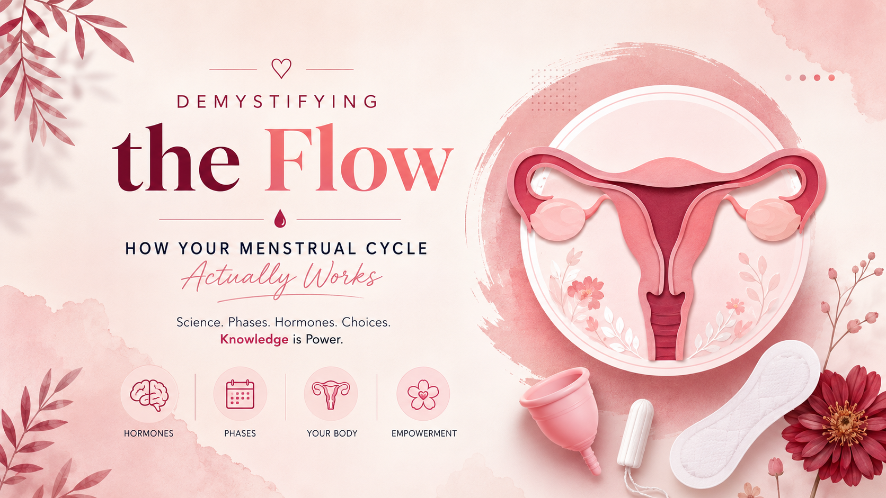

Demystifying the Flow: How Your Menstrual Cycle Actually Works

The menstrual cycle is a highly coordinated monthly communication system between your brain and your reproductive organs. Driven by fluctuating hormones, its job is to prepare your body for a potential pregnancy. When pregnancy doesn't happen, the uterus safely sheds its lining, creating your period.
Textbooks love an exact 28-day cycle, but real-world data shows fewer than 25% of people actually have one. A normal cycle can range anywhere from 21 to 35 days, and shifting a few days from month to month can be completely healthy.

The menstrual cycle is driven by changing hormone levels and coordinated changes in the ovaries and uterus. The illustration here gives readers a scientific visual reference before exploring each phase below.
The four phases, tap to explore
Each phase has its own color. Click or tap a phase to open its details.
The Menstrual Phase
Days 1 to 5
Your cycle officially resets on Day 1, marked by the first day of bleeding.
The internal action: if the previous cycle's egg was not fertilized, estrogen and progesterone drop sharply, telling the uterus it is time to clear its lining.
The result: the uterus sheds its inner lining, the endometrium, a mixture of blood, tissue, and mucus.
Why cramps happen: prostaglandins make the uterine muscles contract to help push the lining out.
The Follicular Phase
Days 1 to 13 · overlaps with menstruation
The internal action: the pituitary gland releases Follicle-Stimulating Hormone (FSH), telling the ovaries to grow follicles containing immature eggs.
The result: maturing follicles produce estrogen, which helps rebuild the uterine lining. One dominant follicle eventually prepares to release its egg.
Ovulation
Around Day 14
The internal action: peak estrogen triggers a sharp surge in Luteinizing Hormone (LH).
The result: the LH surge causes the dominant follicle to rupture and release a mature egg into the fallopian tube.
The fertile window: the egg survives for roughly 12 to 24 hours, while sperm can survive for up to 5 days.
The Luteal Phase
Days 15 to 28
The internal action: the emptied follicle becomes a temporary gland called the corpus luteum, which produces progesterone.
The result: progesterone helps keep the uterine lining thick and stable.
The fork in the road: if pregnancy does not occur, the corpus luteum dissolves, hormone levels fall, and the lining prepares to shed again.
Your toolkit: modern period management
Everyone's body and lifestyle are different, so product choices should reflect individual comfort and needs.
Pads & Liners
Absorbent strips that adhere to underwear for easy external management.
Tampons
Worn internally and typically changed every 4 to 8 hours.
Cups & Discs
Reusable products that collect fluid rather than absorbing it.
Period Underwear
Specially layered, washable fabric designed to catch and lock in moisture.
Sources & further reading
Small source cards with a blurred visual background and fully sharp text.